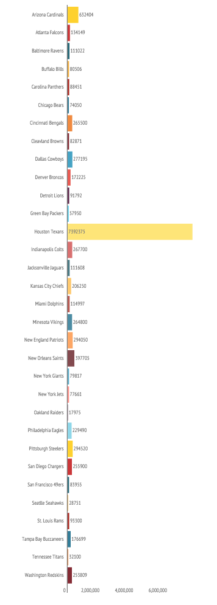

Total Political Donations Made by NFL Teams
Playing in one of the National Football League's 32 teams is seen as a lucrative job. Players can expect contracts worth hundreds of thousands if not millions. The owners of sports teams too are wealthy, with most belonging to the 0.1% of society.
The chart shows the amount donated by each team. Most donate around the same anoumt but one Texan squad is in another league.

The reason for this is the owner Robert McNAir who donated the majority of the amount. He himself has given even more to politics on the side that he has not affiliated with the Houstan Texans. The total amount of his individual contribution is $9,008,750.
In total three team owners donated over one million dollars. The other two are Alex Spanos of the San Diego Chargers ($6,034,633) and Robert Kraft of the New England Patriots ($1,267,400). The team owner who gave the least was the Tampa Bay Buccaneers owner Malcolm Glazer who only gave $1,000 to politcs.
The vast majority of donations made by owners are to the Republican party.
There are only 9 current players who have made a political donations. Jason Phillips who plays for the Philadelphia Eagles was the only player to donate to a Republican candidate. He gave $5,000 to Roger Williams.
The player who donated the most was Vernon Davis from wthe San Francisco 49ers who gave a total of $12,700 to Barack Obama, Rohit Khanna and Mike Honda. He is also the player who donated the most number of times.
Breakdown of Donations
The total team amount donated by each team includes donations made by employees irrespective of department. Coaches and minority team owners, as well as financial officers donate most frequently and in particular to the GRIDIRON PAC.